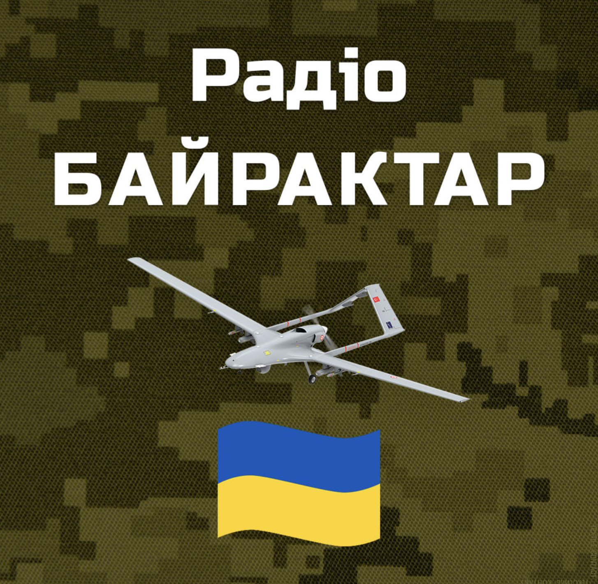

Радіохвиля в Білій Церкві 103,8 Цільова аудиторія - позитивно налаштовані люди, що володіють амбіціями і енергією; робочі, фахівці, керівники, службовці.
10 000 грн
1 міс (3000 сек)
Хіт FM Біла Церква
Радіохвиля 105,7
10 000 грн
1 міс (3000 сек)
Люкс ФМ Біла Церква
Радіохвиля 104.3
10 000 грн
1 міс (3000 сек)
KISS FM Біла Церква
Радіохвиля 107.6
10 000 грн
1 міс (3000 сек)
Мелодія ФМ Біла Церква
Радіохвиля 105.3
10 000 грн
1 міс (3000 сек)

Радіо Байрактар Біла Церква
Радіохвиля 102,8
10 000 грн
1 міс (3000 сек)
Radio ROKS Біла Церква
Радіохвиля в Білій Церкві 93.4
10 000 грн
1 міс (3000 сек)
Фастів 2 станції
БЛІЦ ФМ Фастів 95.0
Радіохвиля у Фастові 95.0
2 000 грн
1 міс (3000 сек)
Перець FM Фастів
Радіохвиля в Фастові 99,6
2 000 грн
1 міс (3000 сек)
Умань 2 станції
БЛІЦ-ФМ Умань 90.6
Радіохвиля в Умані 90,6
2 500 грн
1 міс (3000 сек)
Перець FM Умань
Радіохвиля в Умані 105.7 Цільова аудиторія - позитивно налаштовані люди, що володіють амбіціями і енергією; робочі, фахівці, керівники, службовці.
2 500 грн
1 міс (3000 сек)
Сміла 1 станція
БЛІЦ ФМ Сміла 102.0
Радіохвиля в Смілі 102,0
2 500 грн
1 міс (3000 сек)
Богуслав 1 станція
БЛІЦ ФМ Богуслав 94.4
Радіохвиля в Богуславі 94.4
1 500 грн
1 міс (3000 сек)
Рокитне 1 станція
БЛІЦ ФМ Рокитне 100.3
Радіохвиля в Рокитному 100.3
1 500 грн
1 міс (3000 сек)
Ставище 1 станція
Перець FM Ставище
Радіохвиля в Ставищі 89,2
1 500 грн
1 міс (3000 сек)
Замовити: Реклама на радіо
Залиште заявку — менеджер уточнить деталі та розрахує вартість.